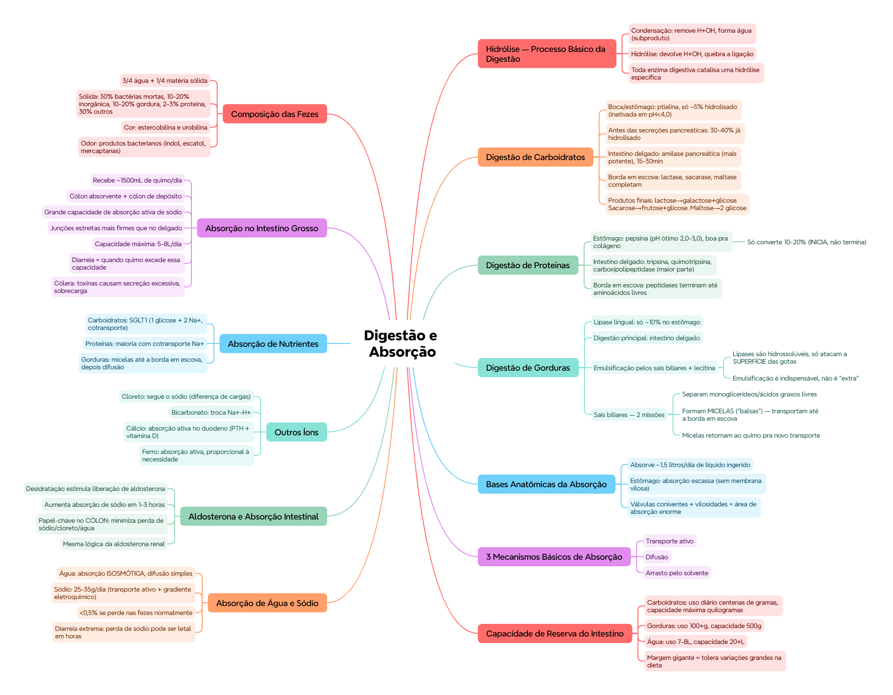

🎯 O que você vai conseguir fazer depois desse capítulo
Explicar por que a hidrólise é o processo básico da digestão
Descrever a digestão completa de carboidratos, proteínas e gorduras, etapa por etapa
Explicar o papel dos sais biliares na emulsificação e no transporte de gordura (micelas)
Descrever os 3 mecanismos básicos de absorção
Explicar a absorção de sódio, água, e o papel da aldosterona
Diferenciar absorção no intestino delgado da absorção no intestino grosso
⚗️ Hidrólise — o processo básico da digestão
Os alimentos se dividem em 3 grandes categorias: carboidratos, gorduras e proteínas (vitaminas e minerais são exceção — não precisam ser digeridos, só absorvidos).
A digestão funciona por hidrólise — o processo oposto da condensação:
Condensação: remove um grupo H e um grupo OH de duas moléculas, unindo-as e formando água como subproduto
Hidrólise: devolve o H e o OH (usando uma molécula de água), quebrando a ligação e liberando as moléculas menores de novo
💡 Praticamente toda enzima digestiva do capítulo (ptialina, pepsina, tripsina, lipase...) faz a mesma coisa no fundo: catalisa uma hidrólise específica.
Ptialina (amilase salivar) mistura com o alimento na mastigação. Só ~5% hidrolisado na boca (tempo curto), mas continua agindo dentro do bolo por até 1h, até se misturar com o ácido gástrico. A amilase salivar é inativada em pH < 4,0. Resultado: 30-40% já está hidrolisado ANTES de chegar às secreções pancreáticas
Intestino delgado
Amilase pancreática — mais concentrada e mais potente que a salivar. Em 15-30 min após o quimo se misturar com o suco pancreático, quase tudo já foi digerido (ainda no duodeno/jejuno)
Borda em escova (enterócitos)
Lactase, sacarase, maltase, α-dextrinase completam a digestão dos dissacarídeos NO CONTATO com a membrana do enterócito
📌 O que o professor cobra nesta seção: o pH exato de inativação da amilase salivar (<4,0) e a % de digestão antes de cada etapa (5% na boca, 30-40% antes das secreções pancreáticas).
🥩 Digestão de proteínas
Local
Enzima/mecanismo
Detalhe
Estômago
Pepsina
Atividade máxima em pH 2,0-3,0. HCl das células parietais chega a pH 0,8. Boa pra digerir colágeno. Sozinha, só converte 10-20% das proteínas em proteoses/peptonas — inicia, não termina, a digestão
Fazem a maior parte do trabalho de quebrar as proteínas
Borda em escova
Peptidases dos enterócitos
Terminam a digestão até aminoácidos livres, prontos pra absorção
🏥 Relevância clínica: pessoas com menor atividade péptica (menos pepsina/ácido) digerem mal carnes — a pepsina é especialmente boa pra "penetrar" no colágeno da carne, que outras enzimas têm mais dificuldade de atacar.
🧈 Digestão de gorduras
As gorduras mais abundantes no organismo são as gorduras neutras (triacilgliceróis).
Lipase lingual — secretada pelas glândulas linguais, deglutida com a saliva, digere só ~10% dos triacilgliceróis, ainda no estômago
A digestão principal das gorduras acontece no intestino delgado
Emulsificação pelos sais biliares: a agitação estomacal + os sais biliares e a lecitina (fosfolipídio da bile) fragmentam os glóbulos de gordura, reduzindo a tensão superficial — isso é essencial porque as lipases são hidrossolúveis e só atacam a SUPERFÍCIE dos glóbulos de gordura. Sem emulsificação, a superfície de contato seria pequena demais pra digestão eficiente.
🟢 Missão dos sais biliares (2 etapas): (1) separam monoglicerídeos e ácidos graxos livres dos glóbulos de gordura sendo digeridos; (2) em grandes quantidades, formam micelas, que funcionam como "balsas" — transportam esses produtos insolúveis até a borda em escova dos enterócitos, depois voltam ao quimo pra fazer o transporte de novo, várias vezes.
Além dos triacilgliceróis, a hidrolase de ésteres de colesterol e a fosfolipase A2 digerem ésteres de colesterol e fosfolipídios, respectivamente.
🧱 Bases anatômicas da absorção
O intestino absorve praticamente a mesma quantidade de líquido que ingerimos — cerca de 1,5 litros/dia (o resto vem de secreções do próprio TGI). O estômago tem absorção escassa, porque não tem membrana absortiva do tipo vilosa.
A superfície absortiva do intestino delgado tem dobras chamadas válvulas coniventes (mais desenvolvidas no duodeno e jejuno), cobertas por milhões de vilosidades — o que amplia enormemente a área de absorção.
⚙️ Os 3 mecanismos básicos de absorção
Transporte ativo
Difusão
Arrasto pelo solvente (substâncias "carregadas junto" pelo fluxo de água)
📊 Absorção diária x capacidade máxima do intestino delgado
Componente
Absorção diária média
Capacidade máxima
Carboidratos
Várias centenas de gramas
Vários quilogramas
Gorduras
100+ gramas
500 gramas
Aminoácidos/proteínas
50-100 gramas
500-700 gramas
Íons
50-100 gramas
Não especificada
Água
7-8 litros
20+ litros
💭 Repare a margem gigante entre o uso diário normal e a capacidade máxima — o intestino delgado tem uma reserva funcional enorme, o que explica por que ele tolera bem variações grandes na dieta.
💧 Absorção de água e sódio
Água — absorção isosmótica: atravessa a membrana por difusão simples, seguindo o gradiente osmótico entre quimo e plasma.
Sódio: absorção de 25-35g/dia, por 2 vias:
Transporte ativo — da célula epitelial pro espaço paracelular
Gradiente eletroquímico — do quimo pra célula epitelial (via transcelular)
🏥 Números que importam clinicamente: 20-30g de sódio são secretados nas próprias secreções intestinais por dia; a dieta média fornece só 5-8g; o total a absorver é 25-35g/dia — e normalmente menos de 0,5% se perde nas fezes. Numa diarreia extrema, essa perda de sódio pode esgotar as reservas corporais de forma letal em poucas horas — é por isso que a reidratação com eletrólitos é uma emergência real.
🧪 Aldosterona e absorção intestinal
A desidratação estimula a liberação de aldosterona (glândulas suprarrenais), que:
Aumenta a absorção de sódio no intestino em 1-3 horas
Efeito secundário: melhora a absorção de cloreto, água e outras substâncias
Papel-chave especialmente no cólon: minimiza a perda de sódio, cloreto e água nas fezes
💡 É basicamente a mesma lógica da aldosterona no rim — conservar sódio, cloreto e água — só que aplicada ao intestino.
Absorção ativa no duodeno, regulada por PTH e vitamina D ativada
Ferro
Absorção ativa, proporcional à necessidade corporal (ex: formação de hemoglobina)
K⁺, Mg²⁺, PO₄⁻
Absorção ativa — íons monovalentes em grandes quantidades, bivalentes em quantidades menores
🍬 Absorção de carboidratos, proteínas e gorduras
Nutriente
Mecanismo
Carboidratos
Glicose (80%) + frutose/galactose (20%). Transporte por SGLT1: 1 glicose acoplada a 2 Na⁺ (cotransporte)
Proteínas
Maioria dos aminoácidos exige cotransporte com Na⁺; outros são absorvidos por difusão facilitada
Gorduras
Micelas de sais biliares transportam ácidos graxos e monoglicerídeos até a borda em escova, onde se difundem pela membrana. As micelas voltam ao quimo pra novo transporte — as gorduras absorvidas "ficam" no enterócito enquanto a micela retorna
🌀 Absorção no intestino grosso
O cólon recebe cerca de 1500 mL de quimo por dia, absorvendo a maior parte da água e eletrólitos ainda presentes. Se divide funcionalmente em cólon absorvente e cólon de depósito.
Características especiais da mucosa colônica:
Grande capacidade de absorção ativa de sódio
Junções estreitas entre células epiteliais muito mais firmes (menos permeáveis) que no delgado
Secreta íons bicarbonato
Capacidade máxima: 5-8 litros de líquido/eletrólitos por dia. A diarreia acontece quando a quantidade de líquido que chega ao cólon excede essa capacidade máxima de absorção. Na cólera, toxinas bacterianas estimulam secreção excessiva no íleo e cólon — sobrecarregando a capacidade de absorção e causando diarreia massiva.
💩 Composição das fezes
¾ água + ¼ matéria sólida, sendo esta última:
30% bactérias mortas
10-20% matéria inorgânica
10-20% gordura
2-3% proteína
30% outros
Cor: estercobilina e urobilina. Odor: produtos da ação bacteriana (indol, escatol, mercaptanas, ácido sulfídrico) — varia conforme a flora residente de cada indivíduo.
✅ O que você deve lembrar
Lipases são hidrossolúveis, só atacam a SUPERFÍCIE das gotas de gordura — por isso a emulsificação pelos sais biliares é indispensável, não é só um "extra".
⚠️ Erro comum
Achar que a pepsina termina a digestão de proteínas no estômago — ela só INICIA, convertendo apenas 10-20% em proteoses/peptonas. A maior parte do trabalho é feita depois, no intestino delgado.
⚡ Questão rápida
Por que a diarreia extrema pode matar em poucas horas, mesmo sem desidratação visível grave?
Porque a perda de sódio nas secreções intestinais (normalmente reabsorvido, mantendo perda fecal <0,5%/dia) pode, numa diarreia extrema, esgotar as reservas corporais de sódio de forma letal em poucas horas — não é só perda de água, é colapso eletrolítico.
🧠 Autoexplicação
Por que faz sentido, do ponto de vista funcional, que as micelas de sais biliares "voltem" ao quimo depois de entregar os ácidos graxos na borda em escova, ao invés de serem absorvidas junto com a gordura?
Os sais biliares são um recurso relativamente limitado e "caro" de produzir — se fossem consumidos (absorvidos) a cada transporte de gordura, o corpo precisaria sintetizar uma quantidade enorme de sais biliares novos para digerir toda a gordura de uma única refeição grande. Ao invés disso, cada micela funciona como um "transportador reutilizável": entrega sua carga de ácidos graxos/monoglicerídeos na membrana do enterócito, e volta pro quimo pra pegar mais carga e repetir o processo várias vezes. Esse ciclo de reuso é o que permite digerir e absorver uma quantidade grande de gordura usando uma quantidade relativamente pequena de sais biliares — os mesmos sais biliares, aliás, são majoritariamente reabsorvidos no íleo terminal e reciclados de volta ao fígado (circulação êntero-hepática), reforçando essa lógica de economia e reuso.
⚠️ Onde todo mundo escorrega
Achar que a pepsina termina a digestão de proteínas — ela só inicia (10-20%)
Esquecer que a amilase salivar continua agindo DENTRO do bolo alimentar mesmo depois de engolido, até ser inativada pelo ácido gástrico
Confundir emulsificação (sais biliares fragmentando gotas de gordura) com digestão de fato (lipase quebrando as ligações químicas) — são processos diferentes e complementares
Achar que a absorção de água é ativa — ela é passiva, por osmose/difusão simples, seguindo o gradiente gerado pela absorção ativa de solutos (principalmente sódio)
Esquecer que o cólon tem junções epiteliais muito mais firmes que o delgado — por isso consegue criar gradientes osmóticos maiores e absorver água com mais eficiência relativa
📚 Se você só puder lembrar de 7 coisas
Digestão = hidrólise (processo oposto à condensação)
Carboidratos: ptialina (boca) → amilase pancreática (delgado) → enzimas da borda em escova
3 mecanismos de absorção: transporte ativo, difusão, arrasto pelo solvente
Sódio: 25-35g/dia absorvidos; aldosterona aumenta absorção em 1-3h
Cólon: absorve o resto de água/eletrólitos, capacidade máxima 5-8L/dia — acima disso, diarreia
🩺 Caso Clínico Progressivo — Cólera
Vamos acompanhar Joana, 29 anos, com um quadro grave de diarreia aquosa após viagem. O caso evolui em 3 níveis — clica em cada um pra ver como as coisas vão se desenrolando.
🧠 Mapa Mental — Digestão e Absorção no Tubo Digestivo
Visão geral do capítulo em formato visual — ideal pra revisão rápida antes da prova. O conteúdo completo, com explicações e exemplos, está no Guia de Estudo.

🃏 Flashcards — SM-2 real + interface Anki
O sistema guarda, no seu navegador, quais cards você já sabe bem e quais precisam voltar mais cedo — cada vez que você avalia um card, ele recalcula quando ele deve voltar.
Cartão 1 / 0Dominados: 0
PERGUNTA
RESPOSTA
✅ Banco de Questões Comentadas
10 questões, do mais básico ao mais puxado. Escolhe uma alternativa, depois clica em "Ver comentário completo" — vale a pena ler até quando você acerta, porque o comentário explica cada alternativa, não só a certa.